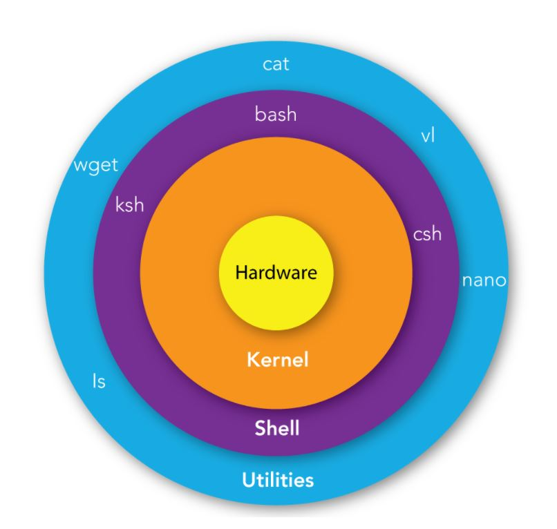
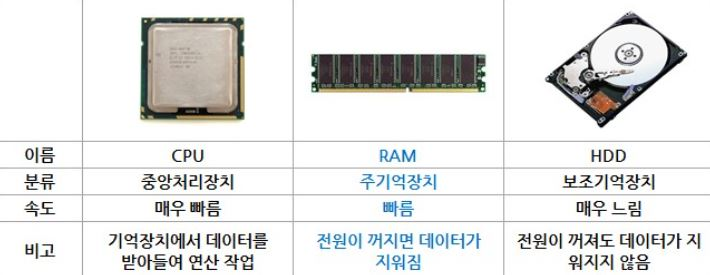
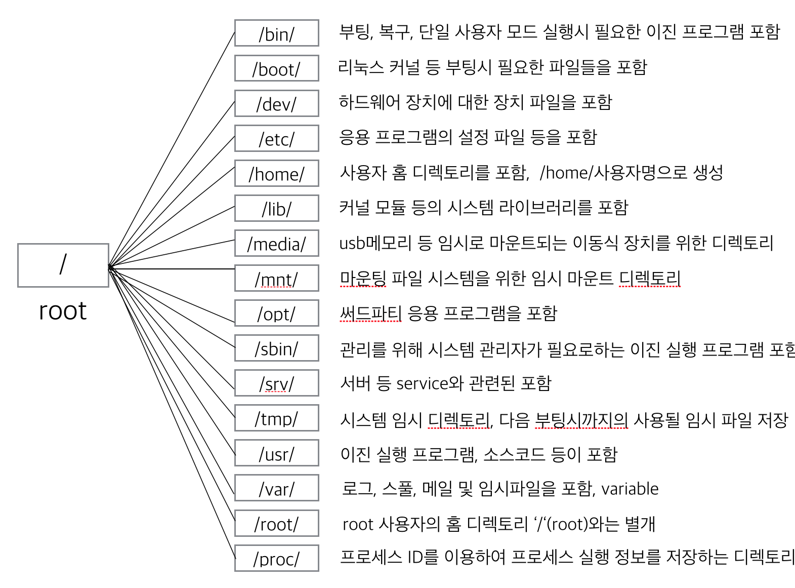
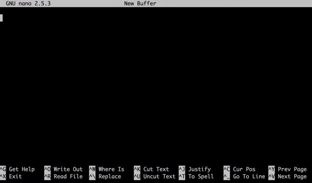
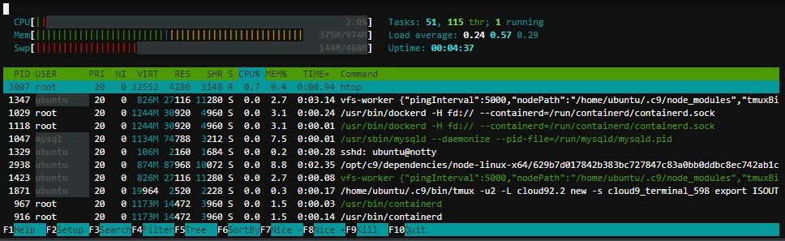
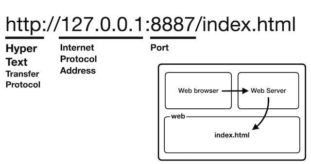
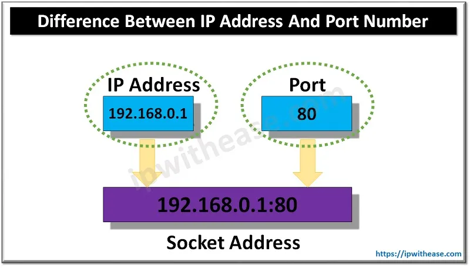
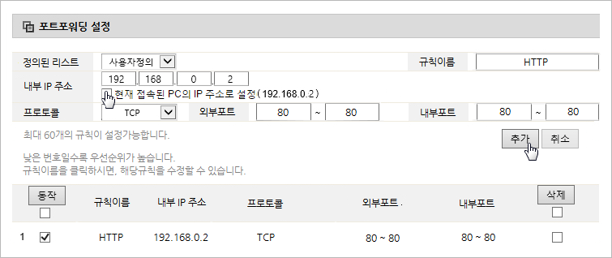

리눅스는 1991년 9월 17일 리누스 토르발스가 처음 출시한 운영 체제 커널인 리눅스 커널에 기반을 둔 오픈 소스 유닉스 계열 운영 체제 계열이다.

하드웨어를 통제하는 핵심 코어 운영체제. 쉘에게 전달받은 사용자의 요청을 하드웨어에게 전달
사용자 명령어들을 컴퓨터 언어로 변역하여 커널에 전달. shell은 기본적으로 bash, tcsh, zsh 등이 사용되며 window에서는 cmd를 기반으로 사용되고있다.
터미널이란 컴퓨터와 사용자간의 서로 소통시켜주는 인터페이스(번역기와 같은느낌)라고 할 수 있다.인터페이란 텍스트 기반과 그래픽 기반(GUI) 두가지를 기반을 포함하는 용어이지만 리눅스 터미널은 텍스트 기반을 말한다. 터미널은 컴퓨터와 소통하기 위해서 키보드를 사용하는것을 말한다. 터미널을 어떻게 만들기에 따라서 컴퓨터간의 소통도 가능하다. 최근에는 리눅스에도 GUI기반이 잘되어있어서 리눅스 명령어를 몰라도 리눅스를 사용할 수 있다.

인터페이스(interface)는 서로 다른 두 개의 시스템, 장치 사이에서 정보나 신호를 주고받는 경우의 접점이나 경계면을 뜻한다.즉, 사용자가 기기를 쉽게 동작시키는 데 도움을 주는 시스템을 의미한다. Linux의 인터페이스는 CLI 방식이다.
디렉토리란 파일 저장소를 의미하며, 리눅스 디렉토리는 최상위 디렉토리를 기준으로 하위 디렉토리들이 존재하는 계층적 트리 구조로 구성되어 있다.

명령어 뒤에 -옵션(parameter)을 붙일 수 있다
현재 위치하고 있는 디렉토리를 알려주는 명령어
리눅스의 명령어는 현재위치에서 명령이 내려지므로 위치를 파악하는것이 매우 중요하다
현재위치에 디렉토리를 생성하는 명령어
디렉토리를 이동하는 명령어
상대경로는 현재 디렉토리의 위치를 기준으로 다른 디렉토리의 위치를 표현하는 것이고
절대경로는 최상위 디렉토리인 루트디렉토리(/)를 기준으로 경로를 표현하는 것이다
현재 디렉토리의 파일 목록을 출력하는 명령어
파일이나 디렉토리를 삭제하는 명령어
파일이나 디렉토리를 복사하는 명령어
이동시킬 파일(디텍토리)이 명령을 내리는 디렉토리 안에 없을때는 경로를 포함하여 적어준다
파일이나 디렉토리를 이동하는 명령어
파일을 생성하거나 갱신하는 명령어
파일 또는 표준입력 내용을 그대로 표준출력에 출력하는 명령어
해당명령의 간단한 사용팁이 출력된다
특정 명령어의 상세한 사용설명서로 이동한다
화면의 내용을 모두 초기화
관리자(super user /root)의 권한{permission}으로 명령을 실행 할 때 사용. 모든 사용자가 이 명령어를 적용시킬수 있는 것은 아니다
실시간 디렉토리에 저장된 파일을 검색해줌
데이터베이스(mlocate)에 저장된 파일정보를 검색하여 결과를 출력해줌
검색어가 어느 디렉토리에 있는지 주소를 알려줌
ls라는 명령어는 /bin 디렉토리에 저장된 프로그램인데, 어떻게 다른 모든 디렉토리에서 실행이 가능한 걸까?
$PATH라는 환경변수에 기본경로가 담겨있기때문에 가능하다. ($PATH의 경로들은 편집이 가능하다.)
파일의 문자열에서 찾고자하는 검색어가 포함된 행을 출력
명령어에 단축키를 지정할수있다
컴퓨팅에서 표준 스트림을 사용자 지정 위치로 우회할 수 있는 다양한 유닉스 셸을 포함한 대부분의 명령어 인터프리터에 일반적인 명령이다. 방향 지정, 방향 변경으로도 부른다.(IO Stream 통제)
텍스트 편집 도구

패키지매니저를 통해 소프트웨어를 간단하게 설치할 수 있다. 다양한 패키지매니저 중에 apt 사용방법을 알아보자
인터넷에서 url 주소를 복사하여 리눅스에서 명령어wget와 결합하여 파일을 다운받을 수 있다
현재 실행중인 프로세스 목록을 보여주는 프로그램

실행중인 프로그램을 종료하지 않고, 백그라운드로 보낸 뒤 다른 프로그램을 실행하고자 할때
항상 실행되는 프로그램을 demon이라고 한다. 예를들면 서버프로그램인 아파치같은
알람이나 백업 등 정기적으로 처리해야할 작업은 cron이라는 프로그램을 이용한다
쉘이 시작될 때 실행되는 명령을 편집하여 쉘을 커스터마이징 할 수 있다.
유닉스 계열 운영체제는 여러 명이 함께 사용할 수 있는 기능을 가지고 있다. 이 기능을 사용하면 권한과 보안의 문제가 발생할 수 있다.
[파일, 디렉토리]에 대해 [read, write, excute]하는 것을 설정할 수 있다. (디렉토리에서 r은 열람, w은 파일생성삭제, x는 cd를통한접근을 의미한다.) 대상 사용자로는 [owner, group, ohter]가 있으며, 그룹은 생성편집이 가능하다
파일, 디렉토리의 permission을 변경하는 명령어
웹브라우저 프로그램이 크롬,인터넷익스플로러 등 다양한 것처럼 웹서버 운영 프로그램도 다양하다. 그중 apache 가 대중적이다.
네트워크 세그먼트의 데이터 링크 계층에서 통신을 위한 네트워크 인터페이스에 할당된 고유 식별자 즉, 컴퓨터의 물리적 주소
IP 주소는 컴퓨터 네트워크에서 장치들이 서로를 인식하고 통신을 하기 위해서 사용하는 특수한 번호이다.
도메인 네임은 넓은 의미로는 네트워크상에서 컴퓨터를 식별하는 호스트명을 가리키며, 좁은 의미에서는 도메인 레지스트리에게서 등록된 이름을 의미한다. domain name과 ip address는
전화번호부에 저장된이름과 전화번호와 같은 관계이다.
DNS(Domain Name Server)에는 거대한 전화번호부와 같이 모든 ip의 domain이 저장되어있다.
ip 127.0.0.1 / domain localhost : 하나의 컴퓨터로 서버와 클라이언트를 수행할때 자기자신을 가르키는 특별한주소

인터넷에서 리소스의 위치를 가리키는 문자열 https:// 뒤의 도메인 이름 모두 포함한 경로
포트는 네트워크가 드나다니는 연결구멍 같은것인데 65000여개가 있고, 0~1024포트는 용도에 따라 표준으로 지정되어있다. 그중 웹은 :80을 표준으로한다. 하지만 다수에게 알려지길 원하지 않을때
포트번호를 지정할수있다.

포트포워딩은 컴퓨터 네트워크 상에서 패킷이 라우터와 같은 네트워크 게이트를 지날 때 IP 주소와 포트 번호 결합의 통신 요청을 라우터에 내선으로 연결된 컴퓨터등을 지정하여 넘겨주는 네트워크 주소
변환의 응용법이다.

시큐어 셸은 네트워크 상의 다른 컴퓨터에 로그인하거나 원격 시스템에서 명령을 실행하고 다른 시스템으로 파일을 복사할 수 있도록 해 주는 응용 프로그램 또는 그 프로토콜을 가리킨다.
리눅스에서
ssh 명령을 사용하여 외부컴퓨터에서 원격으로 서버컴퓨터에 접근하여 제어할 수 있다.
ssh key는 public key와 private key로 이루어져 있는 비대칭적 암호화(RSA) 보안키이다.
keygen 명령을 통해 파일을 생성하여, 원하는 컴퓨터에 복사해두면 로그인
없이 로그인이 가능하다. 이 기능을 이용하여 rsync로 로그인없이 정기적으로 백업이 가능하다.
동기화는 시스템을 동시에 작동시키기 위해 여러 사건들을 조화시키는 것을 의미한다.
리눅스에서 rsync(remote sync) 명령을 사용하여 폴더 및 파일을 동기화 시킬수 있다.